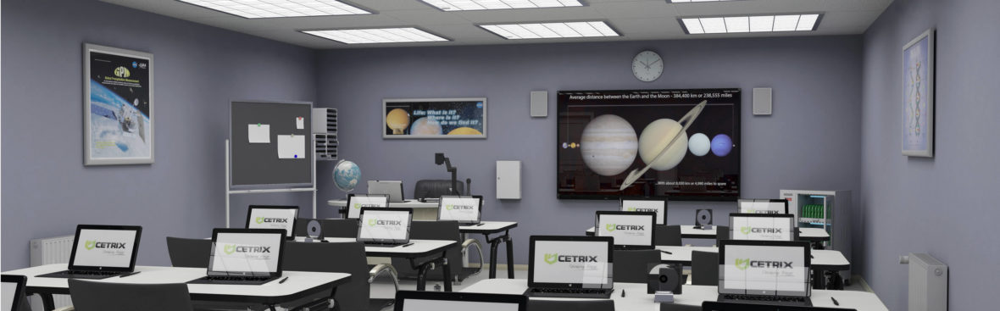

Artificial Intelligence is no longer a futuristic concept in education it is now becoming part of everyday classrooms around the world. In 2026, schools, universities, and governments are rapidly integrating AI-powered tools into learning systems to improve teaching quality, personalize education, and prepare students for the digital future.
One of the biggest education trends this year is the rapid growth of AI literacy programs for teachers and students. Educational organizations and technology companies are introducing AI assistants directly into classrooms, helping students learn more efficiently through personalized recommendations and interactive tutoring systems.
Governments across the world are also creating official AI policies for schools. These policies focus on using AI responsibly while ensuring that teachers remain central to the learning process.

AI tools are helping students learn faster by offering personalized study plans, automated feedback, and instant explanations for difficult concepts. Teachers can also save time by automating grading and administrative work.
However, educators are also raising concerns about overdependence on AI. Many experts believe students may lose important critical thinking and problem-solving skills if AI becomes the primary source of learning.
Privacy and data security are additional concerns, especially as schools collect more digital information about students through online learning platforms.
The future of education will likely combine human teaching with intelligent AI systems. Instead of replacing teachers, AI is expected to become a tool that enhances creativity, productivity, and accessibility in classrooms.
As technology continues to evolve, schools that balance innovation with human-centered teaching may shape the next generation of learners more effectively than ever before.